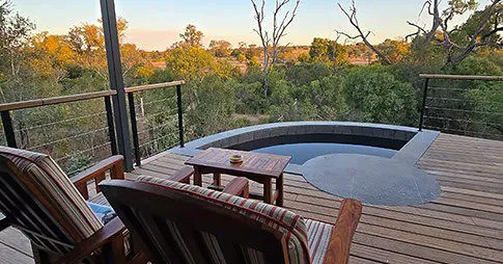

The deck of a safari lodge, the product that is sold six months before anyone stands on it. Photograph: Onyango George / EA Hospitality Pulse
The confirmed booking has stopped being a decision. East Africa's lodges still bank it as one.
New research presented in New York finds that 78 per cent of travellers keep shopping after they book, and half have changed a confirmed accommodation after seeing something better. East African safari bookings are made roughly 186 days out and carry no cancellation charge for the first 126 of them. That gap is where the sector's working capital now sits.
On a stage in New York in late September, Margaux Constantin, a partner at McKinsey, described what her team had found when it stopped asking travellers what they had booked and started watching how they behaved. They had expected a funnel: inspiration narrowing to consideration, consideration narrowing to a purchase. What they found instead was a loop that never closed.
"There was no clear moment of intention to buy," she told the Skift Global Forum. "It was actually a constant intention to buy."
The report behind that line, Winning Hearts in an Age of Infinite Travel Choices, published by Skift Research with McKinsey on 22 September, is built from a survey of more than a thousand American travellers, a diary study tracking 211 real research and booking sessions, interviews with senior commercial executives at Marriott, Accor, IHG, Hyatt, American Express Global Business Travel and Turespaña, and behavioural scientists at Wharton and Columbia. Its findings are modest in tone and awkward in implication. Travellers now pass through roughly 65 touchpoints before a trip is booked, up from 45 in 2018. Seventy-eight per cent keep researching after they book. And, in the report's own phrasing, half "have changed a confirmed accommodation after seeing a better option online".
Heather Balsley, IHG's chief commercial and marketing officer, put the operational consequence plainly at the same event. "You can't stop at the booking," she said. "That trend of travel anxiety is more rampant than ever."
For a city hotel selling a two-night stay booked eleven days in advance, this is a marketing problem. You stay visible, you keep the confirmation email warm, you win the re-shop. For an East African lodge, it is a balance sheet problem, and the reason is arithmetic that nobody at the Skift forum had any cause to perform.
Start with when the money arrives. David Ryan, founder and chief executive of Rhino Africa, told Southern and East African Tourism Update on 31 August that his high-season business books between 186 and 190 days ahead. "Our peak booking time for this high season was January to March," he said, for travel in the middle of the year. That is the shape of the product: a safari is planned around school terms, annual leave and migration timing, assembled by an agent, and paid for in stages across six months.
Now look at what those six months are worth contractually. Natural World Kenya Safaris, whose published terms are unremarkable for the segment, takes a deposit scaled to trip length, 20 per cent for a short safari, 40 per cent for seven to twelve days, 50 per cent for a combined Kenya and Tanzania itinerary. Its cancellation ladder then reads: no charge at all more than 60 days out, 20 per cent between 35 and 60 days, 40 per cent between 15 and 35 days, 60 per cent inside 15 days, and the full price inside three.
Put the two together. A booking made 186 days out sits for 126 days during which the guest can walk away at no cost, and then enters a 60 day window in which leaving becomes progressively expensive. Two thirds of the booking's life is a free option. The deposit is not a penalty during that stretch, it is a refundable holding fee.
That was a tolerable design when travellers decided once and then waited. The Skift and McKinsey work describes a world in which they decide continuously, and in which the decision is not experienced as a risk to be closed but as a pleasure to be extended. Brian Chesky, Airbnb's chief executive, said the quiet part at the same forum: "Shopping is entertainment. The ultimate form of entertainment shopping is planning travel." The 126 days are not dead time any more. They are 126 days of entertainment, conducted on a phone, against a lodge that has already counted the revenue.
Hilton's own research points the same way from a different angle. Its 2027 Trends Report, published on 29 September and conducted by Morning Consult across 14,744 travellers in fourteen markets between 18 May and 1 June, found 67 per cent preferring trips that pack a great deal into a short window, and 54 per cent admitting to pressure to have the perfect trip. Those two findings in combination describe a traveller who is both time-constrained and status-anxious, which is to say a traveller with every incentive to keep looking for something better right up to departure.
None of this means East African operators are about to watch their 2027 books evaporate, and the honest reading of the evidence is more interesting than the alarming one.
Skift's own reporting on the research, published a day after the report, noted that travellers are not materially switching destinations. They are repeatedly questioning whether they secured the best price. That distinction matters enormously here. A guest who has decided on the Mara, booked permits or park entry, and coordinated flights with a migration window is not casually relocating to Botswana in April. The churn risk is not that the trip disappears. It is that the specific property inside the trip gets swapped, which is a very different and much more local injury: the itinerary survives, the lodge does not.
There is a second qualifier, and it is a genuine one. The 50 per cent figure describes travellers who have ever changed a confirmed booking, drawn from a sample of roughly a thousand Americans. It is not a per booking churn rate, and anyone who quotes it as "half our bookings will move" is misreading it. What it establishes is that the behaviour is now ordinary rather than exceptional, which is enough to matter when the contractual window is 126 days wide.
The segment's structural defences are also real. Rhino Africa runs 60 to 65 per cent repeat and referral business, and a guest who came back because of a guide is not re-shopping on price. Rwanda's gorilla permits are bought from the state, date-locked and paid in advance, and the national accounts show how much of the holiday economy that represents: of the 57.6 million dollars of holiday expenditure by air passengers in the second quarter, the National Institute of Statistics of Rwanda records that gorilla revenue accounted for 79.4 per cent. That money is not available to be re-shopped. It is the most churn-proof line in East African tourism, and it belongs to the government.
Which points at the uncomfortable part of Rwanda's data, published in August in its Travel Expenditure Survey Report for the first half of 2026. In the second quarter Rwanda earned 161.8 million dollars in travel exports, up from 121.7 million a year earlier. Holiday travel accounted for 36.9 per cent of it, 59.7 million dollars. Visiting friends and relatives accounted for 28.1 per cent, 45.5 million. Business accounted for 24.9 per cent, 40.2 million. Set the permit concentration against the purpose split and a blunt conclusion follows: the holiday guest, the one the sector's rate cards, marketing budgets and sales trips are all built around, is a minority of inbound travel earnings, and most of the money they do bring is a state fee rather than a room rate.
| Rwanda, travel exports, 2026 Q2 | Value | Share |
|---|---|---|
| Holiday | US$59.7m | 36.9% |
| Visiting friends and relatives | US$45.5m | 28.1% |
| Business | US$40.2m | 24.9% |
| Air credit, North America | US$40.2m | |
| Air credit, EAC and rest of Africa combined | US$49.3m |
The regional line in that table is the one to sit with. North American visitors arriving by air generated 40.2 million dollars. East African Community visitors plus the rest of Africa generated 49.3 million between them. The single most valuable air market for Rwandan travel exports is now the continent it sits on, and that customer books late, stays shorter, is far less likely to be routed through a Johannesburg or London agent, and has no six month lead time within which a cancellation ladder can bite.
So the exposure is not evenly distributed, and that is the planning point. The long-haul, agent-assembled, permit-anchored booking is the one most protected from the behaviour the McKinsey work describes, because its components are prepaid to third parties and its guest has usually bought the destination rather than the bed. The short-lead regional booking, the Nairobi corporate stay, the Kigali conference room, the Kampala family weekend, the domestic Mombasa long weekend, is the growth segment, and it is almost entirely unprotected: booked direct or through an online intermediary, inside the free-cancellation window from the moment it is made, and sitting in exactly the channel where a better offer is one notification away.
Maija de Rijk-Uys, managing director of African Bush Camps, framed the current market to Tourism Update in a sentence that reads differently in light of the New York research. "The market is not necessarily lacking demand," she said. "There is simply more consideration and competition."
More consideration is the whole problem. Consideration used to end at the confirmation. The practical response is not to tighten terms indiscriminately, which in a market where 43 per cent of surveyed trade reported weaker demand than 2025 would simply hand the booking to a competitor with softer ones. It is to price the option honestly. A booking that can be cancelled free for 126 days is a product the lodge is giving away, and it can be sold instead: a lower rate for a firmer commitment, a flexible rate that costs more, a date-change right that is cheaper than a refund right, a deposit that converts to credit rather than cash. Priceline, according to Skift, has responded to the same anxiety by selling more cancel-for-any-reason cover, which is the intermediary monetising precisely the uncertainty that the lodge currently absorbs for nothing.
The second response is to see the churn at all. A lodge selling through agents does not watch guests re-shop. It watches a rooming list change, weeks later, with no explanation attached, and records it as agent behaviour rather than guest behaviour. The sector's instinct is to read that as a relationship problem with the agent. The research suggests it is increasingly a measurement problem, and that the properties which build a direct line to the guest will not necessarily convert more bookings, but will at least know when one is quietly being reconsidered.
East Africa has spent this year worrying about the cost of the seat, the price of the permit and the level of the levy. All of those are real, and all of them are set by someone else. The length of the window in which a confirmed guest can leave for free is the one variable on that list that a lodge sets for itself, and it is currently set as though 2018 never ended.
📣 Telegram 💬 WhatsApp 💼 LinkedIn 📚 All guides